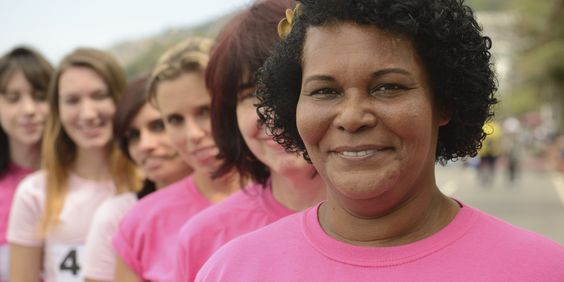

by Ana Vidu, University of Barcelona, member of ISA Research Committee on Economy and Society (RC02) and Tinka Schubert, Loyola University Andalusia, member of ISA Research Committee on Women in Society (RC32)
The University of California-Berkeley has long been central to debates about sexual harassment and sexual assault on campus, not because it has an unusual number of incidents, but for the way it has responded to them. Unfortunately, this problem is very widespread at most universities. As one of many colleges dealing with the issue, UC Berkeley is known for its unusual student mobilization to combat sexual harassment – a movement that has taken off at other campuses too.
C Berkeley has a pioneering tradition of student protests against gender violence on campus making it a leader in this effort. The issue was firstly raised in the late 1970s when sociology students formed Women Organized Against Sexual Harassment (WOASH), a group of women who decided to act on behalf of thirteen student complainants against a sociology professor. As one of the very first cases, it helped break the silence on gender violence in higher education in the US, and broke new ground on the struggle against sexual harassment and assault in colleges. The 1979 federal complaint that WOASH filed against the university constitutes one of the first instances in which Title IX legislation was used as a legal framework against sexual assault in academia. But WOASH did not stop there. Two years later, it created the first orientation guides for students arriving on campus, with materials designed to help students identify sexual harassment, and outlining conduct that would not be tolerated by the university – as well as providing advice to victims about where to seek advice or lay complaints in the event of unacceptable conduct.
y the 1990s, the number of complaints as well as the number of policies, resources for survivors, and specific offices to prevent and solve sexual harassment cases on campuses, had increased significantly. In 2003, “No means no” was introduced into the Criminal Sexual Assault Act, in order to establish “consent” as a prerequisite for sexual activity. In the early 2010s, a new cohort of student activists around the country claimed that the university does not take complaints seriously and is thus in violation of Title IX. Complaints were filed against American universities, charging them with failing to adequately protect students against sexual violence. In 2013, the California State Legislature required UC Berkeley to reexamine its policies dealing with sexual harassment and sexual assault; a year later, in 2014, students pushed for the “Yes means Yes” consent law for college campuses, requiring an affirmative, conscious and voluntary agreement in any sexual contact, recognizing that victims cannot always say “no.”
In 2015, student activism became more vocal than ever, creating a context of solidarity and support from the university community, and encouraging college members to act against gender violence. Recently, social pressure from faculty and department members persuaded a famous Berkeley astronomy professor and Nobel Prize candidate to resign over sexual harassment complaints that stretched back many years. Shortly afterwards, the University of California created a committee to investigate the university procedures for dealing with faculty facing charges of sexual assault. The struggle against sexual violence at US college campuses has involved both social activism and legal changes. The 1979 protests by WOASH were crucial in creating the context, setting a precedent by speaking up, and by filing complaints against harassers and against the University for tolerating harassers. These protests helped to change campus culture, raising public awareness across the country, creating a culture of respect and zero tolerance of sexual harassment by any university member. Sexual assault on college campuses is now widely recognized as a problem for the entire community – a shift that means survivors can now turn to both formal and informal mechanisms for support.